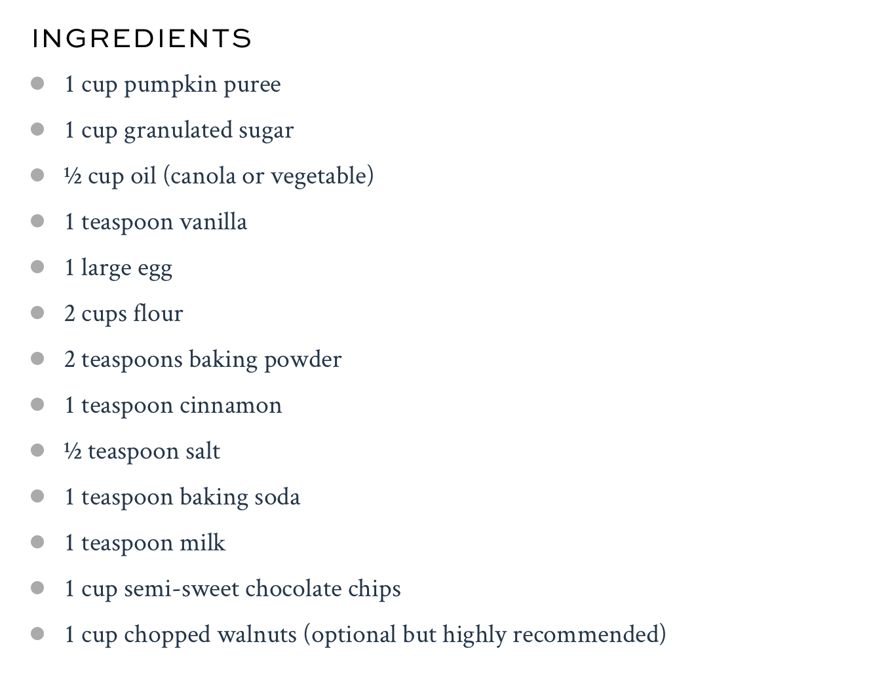
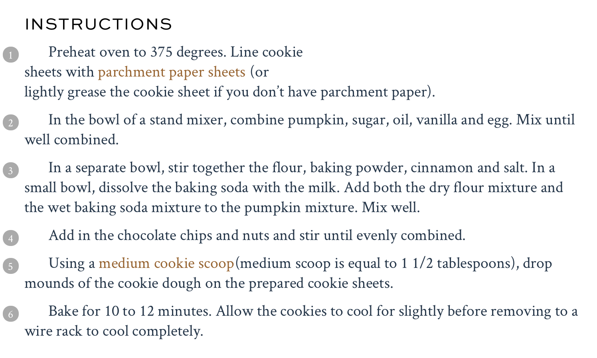

Pumpkin Chocolate Chip Cookies
 
I love this recipe so much because of the hint of pumpkin along with the gooey-ness of the melted chocolate chips. The perfect October snack!
recipe courtesy of a family feast...